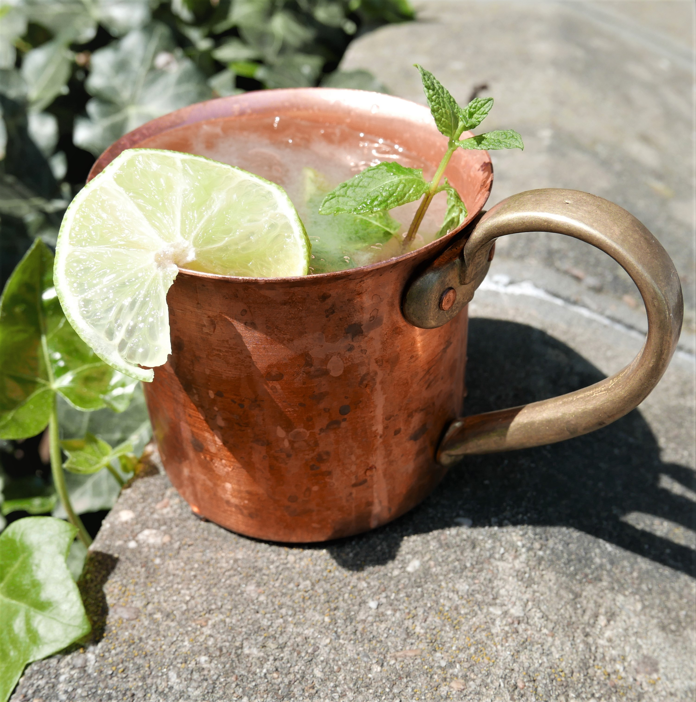

Home
Moscow Mule

Photo by Gordito1869, from Wikimedia Commons, licensed under CC BY-SA 4.0 .
Description
My favorite drink, Moscow Mule!
Ingredients
- 60ml vodka
- 15ml lime juice
- 120ml ginger beer
- Ice cubes
- Opitional: Lime and Mint decoration
Steps
- Fill a copper mug with as much ice as you'd like.
- Pour in the vodka and fresh lime juice.
- Top with the chilled ginger beer.
- Gently stir to combine
- Garnish with a lime wedge and, if desired, a sprig of fresh mint.